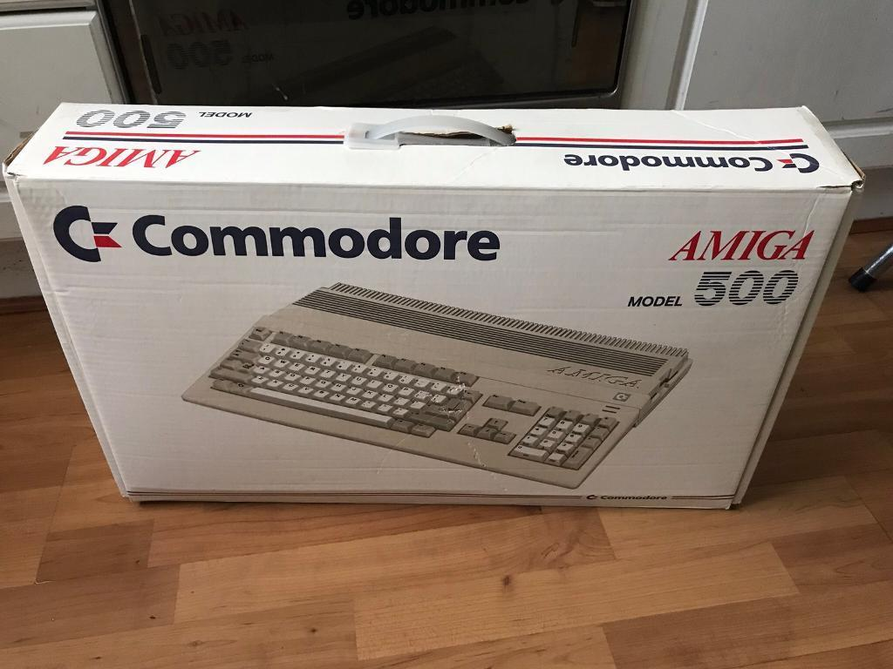

Feb 13th, 2019
Here’s some words you don't ever want to hear: “It’s on her liver, now”.
That was when the last piece of hope left, and my heart sank, and my mind, body, and soul faded away. I don’t know if they’ve ever really recovered, but maybe you don't recover. You just change.
I remember so much about my mother, that’s never been a problem. In many ways I never really left home, I was there with her every step of the way from when I was born through when I was 30 and starting Intercom through when she left us. She was always so supportive of everything I ever tried, I could have been truly woeful at something and she’d tell me to keep going. I could be clearly talented and she’d say "keep going". No matter what just keep going.
Two things that stuck with me that I’ll write about here because writing helps me get my head straight, and sometimes that's exactly what I need. This won't be a good piece, nor is it complete enough. But it's a start.
Firstly she was always a parent. As I’ve grown up and witnessed how people parent their kids, and there’s 2 distinct ways I see. Some believe parenting is a skill you use when needed, when there are parenting moments where you must step up and teach the child what they did right or wrong. In those moments the child learns and you've done your job.
The alternative and the one outlined by Clay Christensen in “How will you measure your life”, is the one that resonates with me more. You’re always parenting, especially when you don't want to be. Your child learns from every single thing you do. Every time you show patience, every time you show kindness, fear, anger, bitterness, resentment, jealousy, pride, compassion, you name it. You are always teaching your children, you can’t switch it on & off.
That’s the mother that she was to me.
Secondly, randomly, was the Amiga 500. Yes, you read that right. I’m the youngest of seven children and when I was 5 my Dad left the house (or was asked to leave to live with his new partner), and that left my Mam to look after me and 4 others. This was 1980s Dublin. Money was beyond tight and she had to look after 5 kids, 4 in school, with no job, and somehow make ends meet. And still, one March for my birthday, I got this…
Where the fuck did she get the money to get me an Amiga 500?
Seriously. I know I wanted it more than anything and I probably literally never shut up about it. But I think it was £700 Irish pounds. I just had to look up how to type £, that's how far back we’re going. And because of that, I learned to use Amiga Workbench, I learned AMOS, I learned how to change memory contents while playing computer games using the incredible Action Replay and because of that (and the incredible support of a friend and his family) I realized I was good at computers. I got them. They seemed to understand me. And because of that I studied computer science and software engineering and because of that I met David Barrett and because of that I started a blog (originally held on this very domain) and because of that I wrote about programming, design, and usability, and because of that met Eoghan, and we started an agency called Contrast and David joined and because of all that Intercom got started in 2011. We used to day dream about the idea that Intercom could go on to be worth, who knows, maybe $50 million one day. Maybe. Who knows.
And if it ever was I swore to myself, thatI’d pay my Mam back for that Amiga 500 1,000 times over. And then after December 10th, 2012 3:10pm, it was no longer possible to pay her back at all, she was gone. But I’ll make it up to her, that I promise.
Today my mother Nancy Traynor should have turned 80 and today my daughter Nancy Traynor turns 5 months old. I’ll do my best to look after the latter until I see the former again.
I know, dear reader, this is probably a tough read for you. That’s actually true whether you have 0, 1, or 2 parents. All I can say is spend a lot of time with them if they’re still here. (And now a rant will follow...)
See that’s the one tip that gets missed in every single bullshit guru tweetstorm about how to bleed every last piece of productivity from every second you have to spare. Wake up at 5am, fast, cycle, spin, work, learn, read, tweet about reading, exericse, fast, are-you-reading-yet, sleep early in a cool dark room with a air purifier, read again, don't forget to journal, do this until it's time for brunch on Saturday!
But look around you, all these people will be gone one day, especially the ones who spent their whole lives looking after you, yes you. Think about that once in a while. Spend your time, love, energy, and emotion accordingly. Know this: inside every 80 year old is an 18 year old wondering what the fuck just happened. We'll all get there.
Raymond Carver (also died of lung cancer), wrote this last piece (Late Fragment) from his deathbed: “And did you get what you wanted from this life, even so? I did. And what did you want? To call myself beloved, to feel myself beloved on the earth.”. It's good to think about that idea from time to time. What are you actually working toward?
So it's taken me ~6 years to actually publish this, and let’s be honest, it's certainly not because I took the time to write it well, right? Some personal pieces are just too hard to click publish on because your feelings keep evolving and you're never sure it’s final because your life is still going and well there's always better and more respectful ways to phrase things, but screw it, it's done now. Happy birthday Mam, I love you, and I swear I'll keep going ❤️